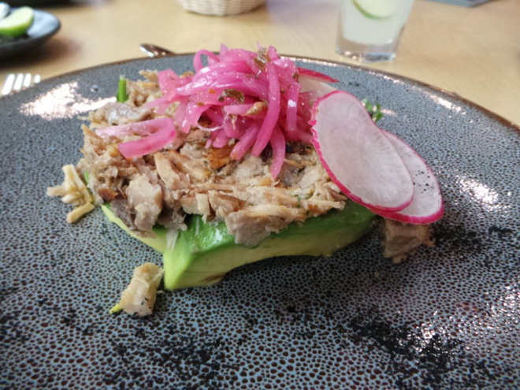
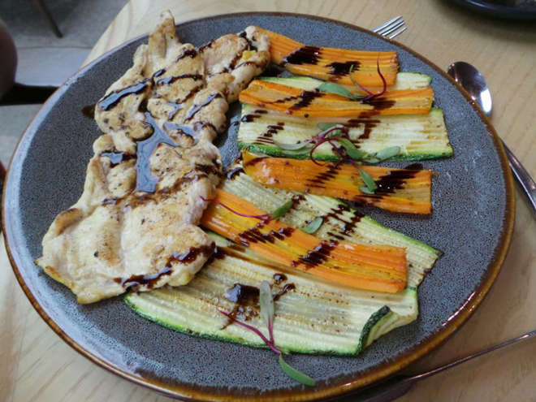
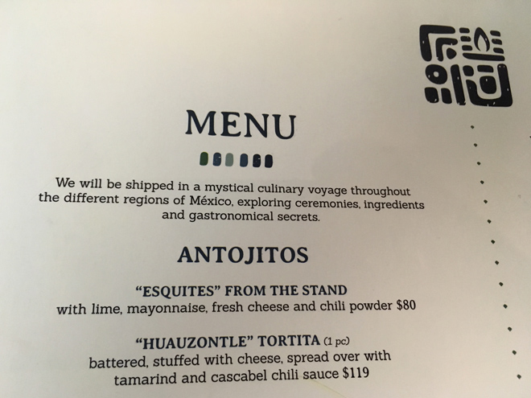
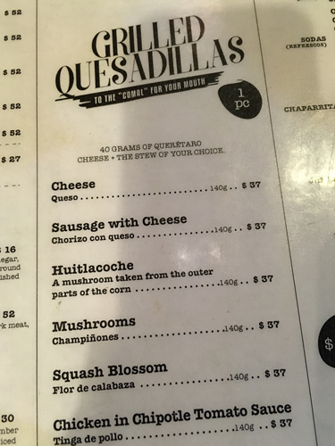
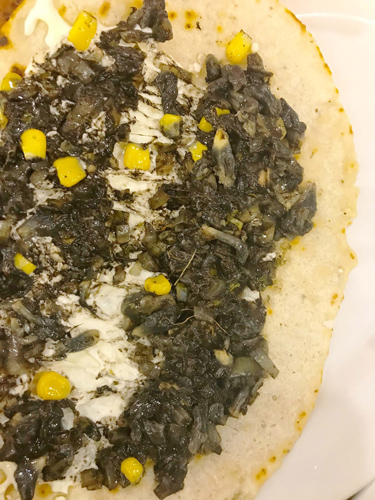
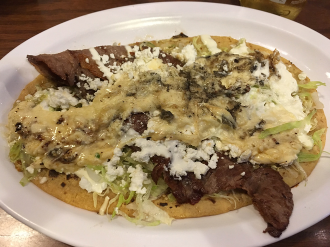
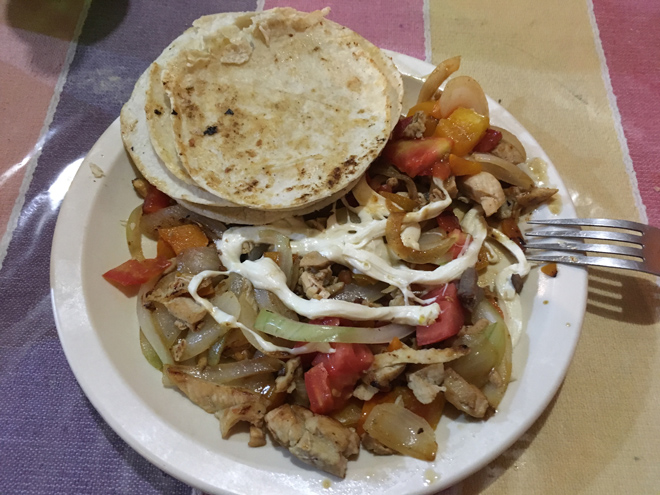
In San Cristóbal we mistakenly ordered a plate of nachos which arrived thus (below). Tasteless and solid. We took them away with us and threw them in a bin as even the local dogs wouldn't eat them ...
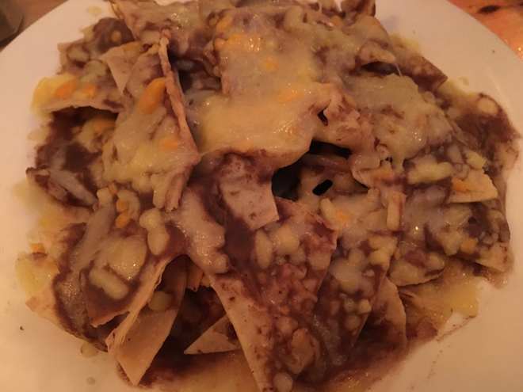
It seems that every meal in Mexico comes with an obligatory side order of dark refried beans which no one ever seems to touch. You'd have thought they would have got the message by now.
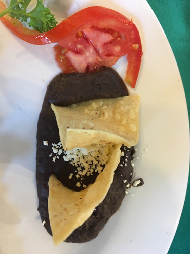
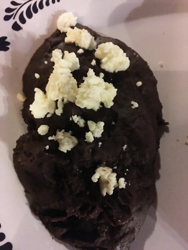
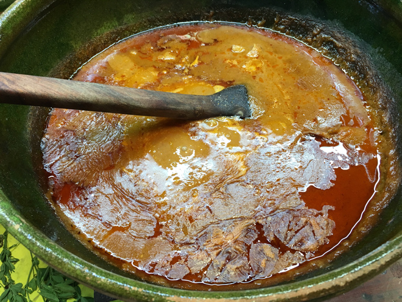
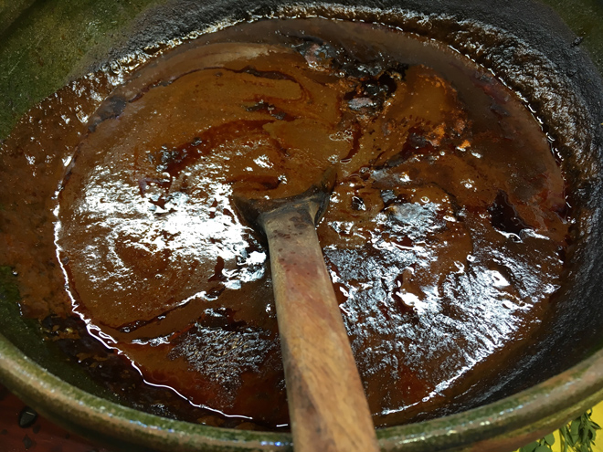
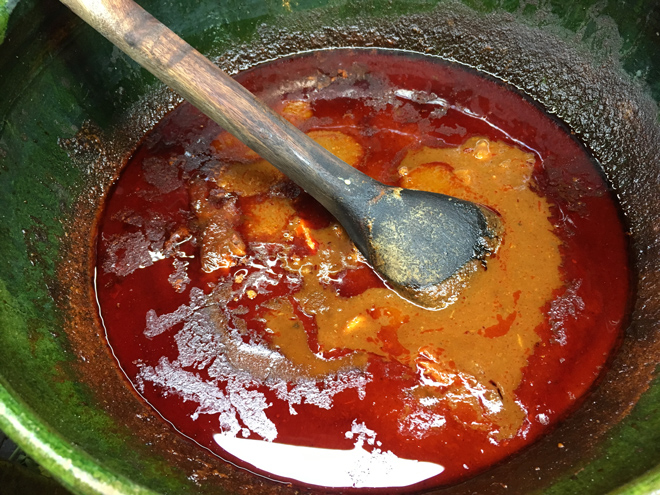
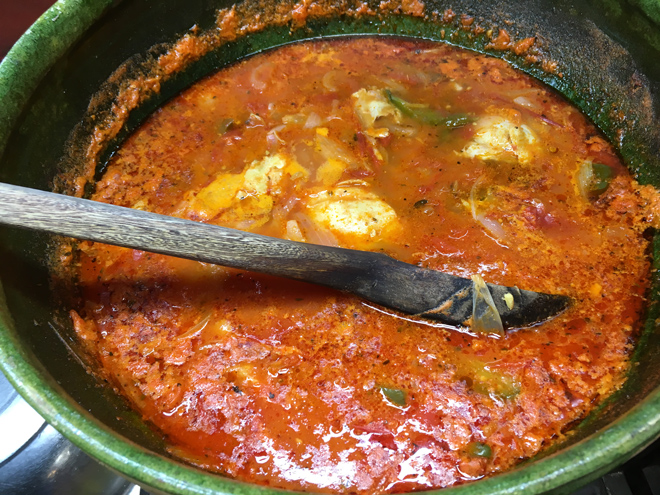
After a heavy day exploring the Sumidero Canyon (crocodiles, iguanas, spider monkeys, pelicans - you know the sort of thing), I was really ravenous, I'd ordered fish soup and had somehow expected something really delicious and warming. Instead I got a plate of muddy-flavoured fish in an insipid drab sauce which was inpenetrable to knife or fork and full of lethally sharp bones. Nice tablecloth though. I gave up ...
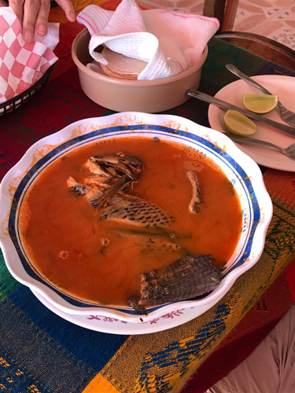
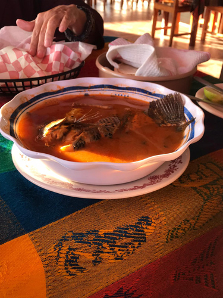
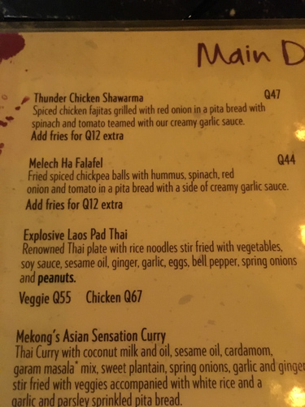
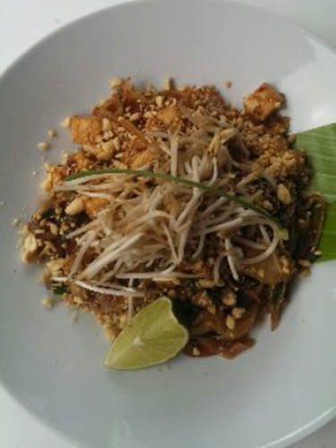